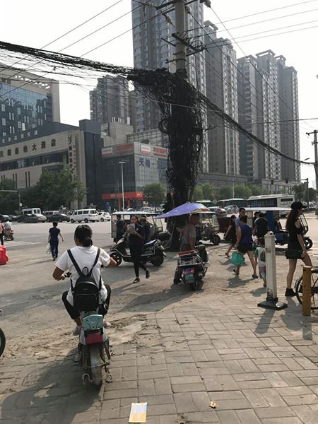
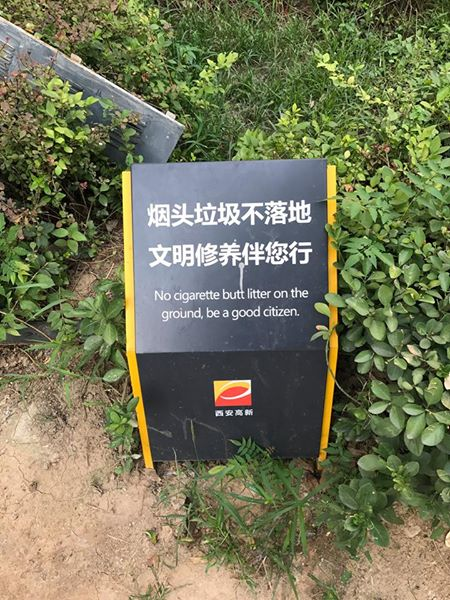
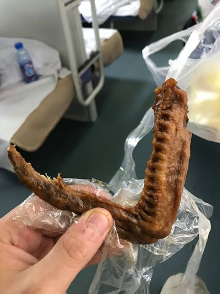

Čína - 1. část léto 2017
Moje druhá země na cestě kolem světa byla Čína. Většinu času jsem strávil v XI'anu a Kunmingu, mezi kterými jsem dva dny přejížděl vlakem. Něco málo o tom, jak vypadá běžný život v čínských velkoměstech.
Můj čínský výlet nezačal úplně nejlépe. Z Ulánbátaru jsem se dostal do Pekingu, kde jsem měl mít navazující let na Xi’anu, který byl ale několikrát odložen a pak ho zrušili kvůli počasí úplně, podobně jako všechny ostatní vnitrostátní lety v Pekingu. Letiště se tak najednou zaplnilo tisíci lidmi, kteří chtěli informace. A tak jsem poznal čínský národní sport: čekání ve frontě. Já jsem v ní zůstal 4 hodiny, během kterých jsem - a ano, klidně to tady přiznám - surově předbíhal kohokoliv, kdo se nedokázal bránit.
Po půlnoci jsem dostal novou letenku do další destinace a poprvé si vyzkoušel, jaké je to kempovat na letišti. Let se navíc celý další den odkládal a do Xi’anu jsem se dostal až za tuhé noci. Jestli opravdu něco nechcete zažít, tak to je zrušený let v Pekingu.
Ani v Xi’anu jsem nezačal dobře. Protože už bylo pozdě, nezbývalo mi nic jiného než si vzít taxi. Vybral jsem si jednoho taxikáře a s ním dohodl cenu. Pak mě odvedl daleko od ostatních do svého neoznačeného auta, kde už seděla další osoba. Mě posadili dozadu a vydali jsme se na cestu. Trochu mi vrtalo hlavou, jak ví, kam jet, když jsem mu neukázal adresu, ale dobře, asi se zeptá až v centru. Více nervózní jsem začal být, když jsem podle GPS zjistil, že jsme kousek před Xi’anem odbočili na úplně jinou cestu a hnali se lesem pryč od Xi’anu. Taxikář s druhou osobou nemluvil, jen se občas na sebe podívali. Ani nevím proč, ale zrovna jsem vzpomínal na článek o tom, jak mají v Číně problém s nelegálním prodejem lidských orgánů.
Naštěstí jel taxikář jen odvézt kamaráda za město a pak už mě dovezl ke Claire, která byla moji hostitelkou v Xi’anu.
Claire je z chudých poměrů, vyprávěla mi o tom, jak vypadala Čína před mnoha lety, kdy za doby velké chudoby musela sdílet koupelnu se spoustou dalších lidí a jak si to dnes lidé kompenzují tím, že potřebují vypadat bohatě, aby se co nejvíce odlišili od starých časů.
A nebo o tom, jaké to pro ní je, když je jí 28 a stále není provdaná, protože v Číně je takové nepsané pravidlo, že by žena měla být do 25 vdaná a pokud není, je něco špatně. Takže ona i další Číňané, které jsem později potkal, mi říkali, že spoustu párů, na které narazím, byly dány dohromady jen proto, aby oba byli už manželé, protože takhle to společnost chce.

Dobré ráno z Číny! Podívám se z okna a první, co vidím, je nějaký Číňan, který přelezl balkon a prochází se po římse. Ranní procházka na čerstvém vzduchu ve vyšší nadmořské výšce, chápu!
Městská kola, tímhle teď Čína žije. S Claire jsme takhle projeli celý Xi’an, jen občas jsme se zastavili na pivo, protože Claire měla žízeň. Pivo pije pravidelně od 8 let, v Číně totiž není věkové omezení na alkohol.
O to, že byste zrovna někde nenašli městské kolo, se opravdu bát nemusíte, jsou jimi zaplněné celé ulice.
Jezdí na nich všichni podobně jako tady paní policistka. Druhá alternativa jsou elektromotorky, kterou pro dnešek naopak zvolila paní s elegantní útěrkou (?) na hlavě.

Elektrikář. To je povolání, které bych v Číně dělat nechtěl.

Čína, země všech možných vozítek. Když už jsem měl pocit, že mě nic nepřekvapí, projel kolem mě čínský děda na motorce polepené nápisy Hello Kitty a já měl zase o čem přemýšlet.

U Claire jsem nakonec zůstal místo dvou dní pět, protože mi v Xi'anu bylo dobře. Každé sídliště v Číně je hlídané, dostanete čipovou kartu a tou se musíte prokázat, když chcete vejít dál. Na obrázku je Li, náš hlídač v Xi’anu (on se asi jmenuje jinak, ale já mu takhle říkal, protože takhle podle mě má vypadat Li).
“Buď dobrým občanem a neodhazuj nedopalky na zem,” upozornění ve všech čínských parcích.

Ulice v Xi’anu.
Angličtina nikde v Číně není. Ale líbí se mi, že když už někde náhodou něco anglicky je, tak je to použito velmi prakticky jako v tomto případě.
Číňané rádi říkají, že čínština je nejtěžší jazyk na světě. A část pak ještě dodá, že angličtina je ten nejlehčí. Že měli všichni tenhle nejlehčí jazyk ve škole a dnes s ním nikdo neumí mluvit jsem přehlížel, ale když jsem chtěl být obzvláště škodolibý, tak jsem nutil mé čínské přátelé říct “řeřicha” nebo “zmrzlina”, což obvykle ukončilo diskusi o tom, který jazyk je opravdu nejtěžší.
Čas opustit Xi’an. Claire mi pomohla koupit lístek a já se vydal na více než 30 hodin dlouhou cestu rychlovlakem do Kunmingu.
Nástup do vlaku je jako všechno v Číně organizované. Takže 20 minut před přijezdem vlaku se všichni seřadí vzorně do zástupu. O pár minut později vás pustí o kousek dál. A o pár minut zase o kousek dál. Pak přijede vlak, zastaví a tendy vás konečně pustí úplně, jste volní jako ptáci a můžete běžet do svého kupé!
Pár minut před nástupem na vlak mám divný pocit a dívám se, co to po mě leze. A celý prostor je najednou zamořen pěticentimetrovými kobylkami, které se snaží skočit a vlézt kamkoliv. Scéna jak z hororu!
Lůžkové vlaky. Spí se v nich dobře, ale doporučuji nespat na horní palandě. Noc byla klidná, pouze přerušovaná občasnými výkřiky těch, co se praštili na horní palandě do hlavy.
Později jsem dostal hlad, tak jsem si koupil nějaké uzené prsty nebo co to bylo. Neznámá dívka, která si sedla proti mě a pozorovala mě, jak se snažím otevřít obal, to po nějaké době nevydržela, potravinu popadla, surově obal zničila a já se konečně mohl najíst.
Scénu zaznamenal velitel rodiny a poté, co jsem dívce nabídl první prst, mi on nabídl volný přístup k jejich jídlu. Dostal jsem tak neomezený přístup ke všem masem obaleným kostem všech možných zvířat.

Jakmile rodina odešla, zabral jejich místo jeden farmář z Kunmingu. Chvíli mě pozoroval a pak mi podal telefon se zprávou, která je na obrázku. A pak mě, podobně jako všichni Číňani, se kterými jsem se dostal nějak více do kontaktu, pozval na jídlo.
Četl jsem a slyšel jsem mnoho o tom, jací jsou Číňani a vše bylo jen negativní. Moje zkušenost je naprosto odlišná. Mnohokrát mě lidé zvali v zemích jako je Turecko třeba na čaj, ale nikdy mě nezvali na opravdu drahé jídlo, což se právě v Číně stalo několikrát. Také si vybavuji jednoho Číňana v Austrálii, který mi pomohl s rozbitým kolem a nechtěl mi dovolit, abych si tu opravu (cca 3 - 4 tis. Kč) hradil sám. Moje čínská přítelkyně mi pak říkala, že tohle je povinnost postarat se o cizince a že to tak mají dělat všichni (a mimochodem, i ona za mě první večer všechno chtěla platit).
Mí hostitelé v Kunmingu. Nechtěl jsem bydlet v hotelu, a tak jsme si našel jednu čínskou rodinu, která byla ochotna mě ubytovat, přestože nemluvili anglicky. Mohl jsem si je vyfotit, ale chtěli být na fotce jen s jídlem, které mi nabídli. Pro ně to byl větší zážitek než pro mě, při jídle si mě občas natáčeli, hlavně při trápení s hůlkama nebo při pokusu nahradit hůlky příborem.
Park v Kunmingu. Chlapec se švihadlem a muž s kytarou.
Park v Kunmingu podruhé.
Místní trhy. Prodává se tady vše, vedle kuřat i psi, zkrátka na co máte zrovna chuť.
Malé děti tady nemají pleny, místo toho mají díru v kalhotech, takže když chtějí …. pojďme dál.
Taxíky ala Mr. Bean.
Kunming, poslední den před tím, než vyrazím na dlouhou cyklojízdu do Hong Kongu. Mám před sebou 20 dní a 2000 km! Ráno jsem si ještě z legrace stáhl TanTan, což je čínská kopie Tinderu a s jednou holkou si domluvil schůzku. Nemluví anglicky, ale cítím z toho dobrý příběh pro Facebook, navíc stejně nemám co dělat. Takže se večer sejdem a ráno už hurá do Hong Kongu!